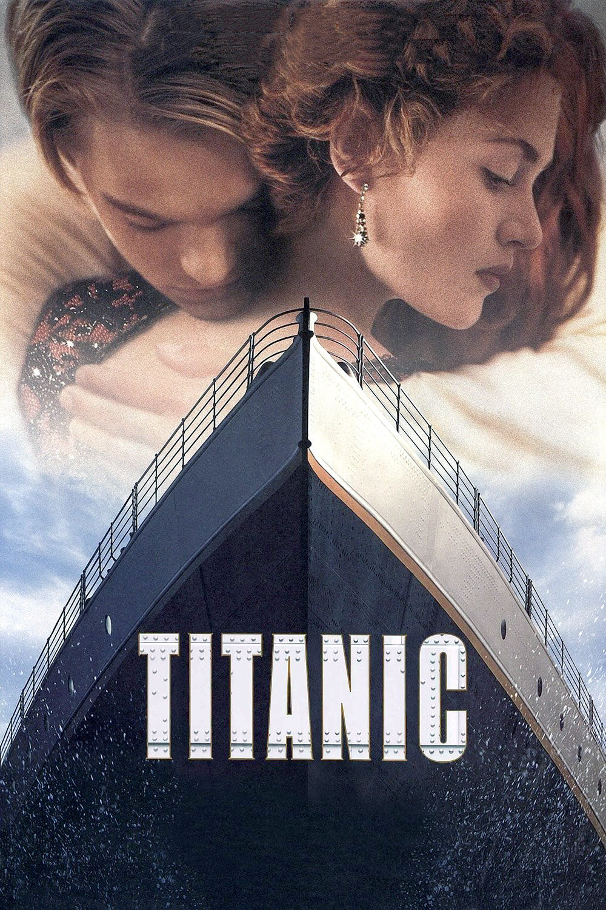

Titanic

Diretor: James Cameron
Com: Leonardo DiCaprio, Kate Winslet, Billy Zane
Gênero: Drama - Romance - Dublado
Censura: 12 anos
Tempo de duração: 194 min.
Sinopse: Jack, um artista pobre, e Rose, uma jovem rica, se apaixonam durante a viagem inaugural do navio Titanic em 1912. Apesar das diferenças sociais, eles vivem um romance intenso, mas o destino do navio e seu amor são colocados à prova quando o Titanic colide com um iceberg.